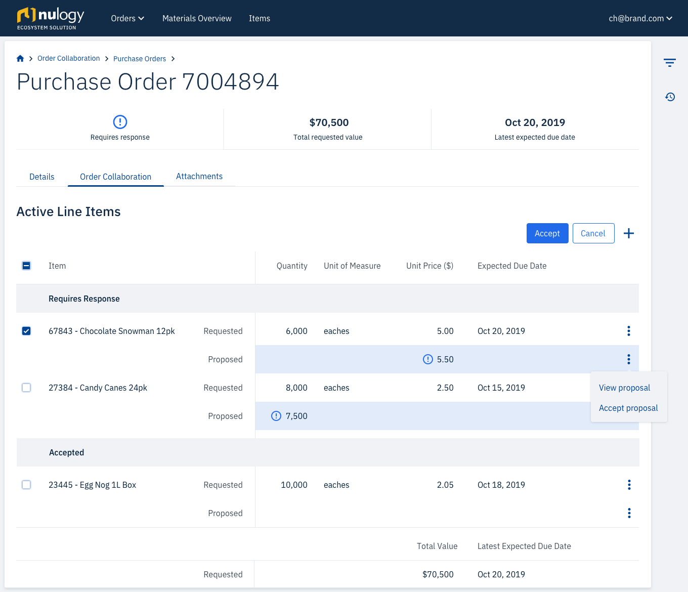
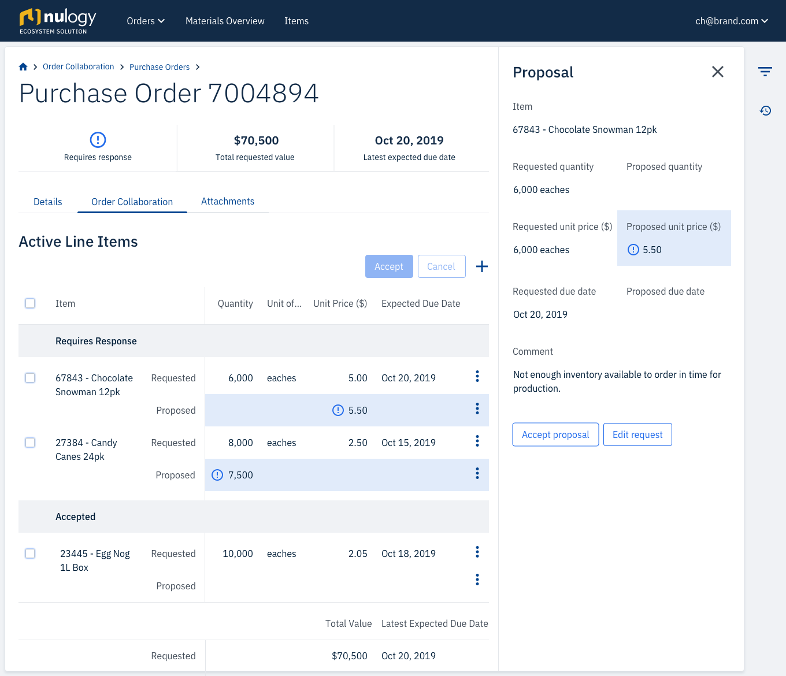
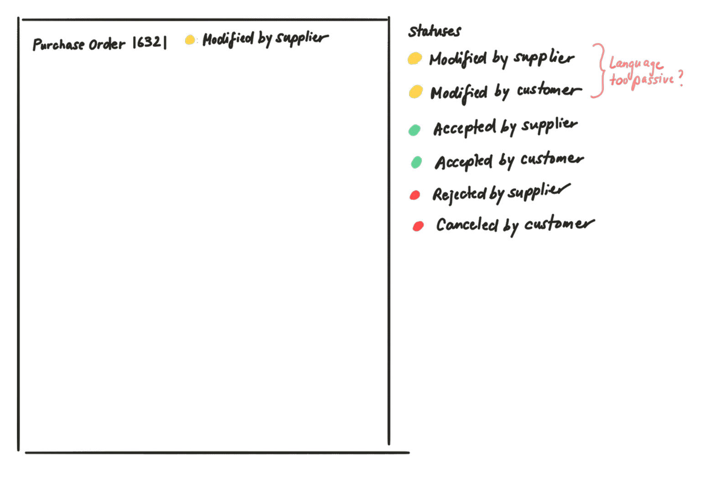

Order Collaboration
Impact & results
- Adopted by existing customers
- Generated 5 new sales leads at the Gartner supply chain conference
- Key feature in signing a new customer
Problem
Most of the time, brands negotiate with their supplier on orders through emails or over the phone. As you can imagine, this gets messy when they start to handle multiple Purchase Orders, each with several to hundreds of line items requested. A lot of time is wasted sifting through decentralized information that could be spent scheduling work or addressing issues on the production floor. That’s why Nulogy wanted to build Order Collaboration.
+ more context
- hide context
Most of the everyday products we own started out the same way - they originated from a Purchase Order. A purchase order is commercial document issued by a buyer to a seller indicating types, quantities, and agreed prices for products or services. Usually, the buyer is a brand with its own line of products or services. For example, the brand that makes your favourite shampoo that’s currently sitting in your shower caddy. The seller is also known as the supplier. The supplier is responsible for manufacturing and fulfilling the order to the specifications detailed in the purchase order.
The brand and supplier need to agree on the exact products and the quantity and price for each product requested. There can be multiple products requested on a single purchase order. You can think of each unique combination of product code, quantity and unit price on the purchase order as a Line Item.
Solution
Order Collaboration removes the reliance on manual tracking and updating of Purchase Order information over disjointed documents and spreadsheets by allowing brands and suppliers to collaborate on one platform.
Surface the most urgent information first
The table is by default sorted by status, so planners can focus on the Purchase Orders that require the most immediate action first.
Make it easy to collaborate
Suppliers can easily make proposals on requests from the Brand.
Account for varied volume
Line Items can be accepted or cancelled individually, or in bulk. This scales whether you are managing 2 line items or 100 line items.
Highlight incremental changes
The most recent changes are emphasized on both the brand and supplier side. The user can quickly identify what has been modified since they last sent the Purchase Order.
Design for auditability
The history log keeps a record of all changes to the Purchase Order, making it easy to trace actions back to a user.
My role
I was the sole product designer a team comprising of a Product Manager, 4 Developers, and 1 Agile Tester.
Tools


Approach
Build a shared understanding by collaborating early in the process
One of the first things we did was run an example mapping session with the team. This created early team-wide alignment and the multidisciplinary perspective allowed us to identify behaviours and use cases that if missed, would have led to re-work further into the design process.
Validate quickly, and early on
I spent two weeks with a design co-op sketching out our ideas and validating them with former Brand Planners that now worked at our company. We spent several hours each day together sorting out the workflow and bouncing ideas off each other. At the end of the two weeks, we showed them our sketches and made adjustments based on the feedback.
Phase 1: Define
Who are the key players and what are they trying to accomplish?
I interviewed 3 planners on the brand side, and 5 customer service representatives (CSRs) from the supplier side. They were each asked similar questions, with two versions of the script for either the brand or supplier perspective.
+ view questions
- hide questions
- Can you describe how you spend a typical day or week?
- Which activities do you spend the most time on?
- What is/are your worst pain point(s)?
- What kind of reports or documentation do you work with to negotiate on orders with your customers?
- Who do you usually communicate with on the customer side? What input do you need from them to either generate or modify the documentation?
Using responses from the interviews, I generated personas by narrowing down the findings into three categories using the job-to-be-done, pains, and gains value proposition.
How can we help our users accomplish their goals?
After defining the brand and supplier personas, I created a workflow to capture how both supplier and brand would collaborate together.
Phase 2: Ideate
Information Density
When we ran our initial validation with the paper prototypes, we experimented with Purchase Order details in a modal and in a slide out side panel.

However, our requirements changed partway through the design process – users needed to specify multiple line items on a Purchase Order, instead of just one. I opted to move the information to a new page, to allow for more real estate to manage this information.
Actionable Language
Capturing the status of a Purchase Order was key for users to understand which party needed to action on a Purchase Order. We initially approached the naming of statuses from by describing the actions taken on the Purchase Order, using terms like “modified by supplier” and “modified by brand”.
However, after validation with the Brand Planners, we discovered the naming was not resonating with them. Planners have an endless to-do list and are therefore constantly under pressure to ensure deadlines are met. The passive language used did not convey urgency to act on the Purchase Orders. We refined the language to encourage action and rather tell the planners what needed to be done. We settled on the following statuses listed in order of highest priority first: Requires Response, Pending Response, Accepted, Canceled.
Phase 3: Prototype and Test
Task Walkthrough
To test the overall usability with suppliers, I designed a task walkthrough that simulated the supplier receiving a Purchase Order from the brand, and asked the supplier to complete a series of tasks to successfully respond to the Purchase Order. One of the most notable findings occurred in 80% of the tests. The suppliers would immediately go to reject the Purchase Order, instead of responding to the Purchase Order and making proposals.
+ view tasks
- hide tasks
- You have just logged in to GO, and you see that you have some Purchase Orders that require your attention. Please navigate to the first one in the table.
- Can you describe to me what you are currently looking at?
- Now that you’ve had some time to look over the line items, you’ve decided you want to make some proposals to two line items. How would you do that?
- For 6734 Aspirin Family Pack, you want to propose $1.50 instead of $2.00, and Feb 18, 2019 at the same time of day.
- Now indicate a reason and add a change note to the line item.
- For 7734 Aspirin Family Pack, you want to take the 3 day buffer - please propose a later date, then indicate a reason and add a change note to the item.
- Let’s share those changes with the customer now.
- What does it look like has happened since you’ve shared those changes?
- Let’s now accept the last two items that require response.
- Is everything looking as expected?
- Let’s say for example, that we made proposals for 6734 Aspirin Family Pack but we’ve changed our minds and want to accept it. How would you do that?
- For this example, let’s cancel these changes.
- Now, let’s say the customer has now responded to the Purchase Order. The screen on the next page will simulate a response to the Purchase Order from the customer. Click anywhere to proceed.
- What do think are the changes that have occurred?
- And if you were to respond to the line item and make a different proposal, where would you click?
From the testing, I found 3 major takeaways:
1 - Blanket “Reject” button was drawing too much attention
One of the most notable findings occurred in 80% of the tests. The suppliers would immediately go to reject the Purchase Order, instead of responding to the Purchase Order and making proposals. Upon further investigation, I discovered that suppliers will almost never reject a Purchase Order, instead working with the Brand to agree on terms. I removed the reject button in later tests and noticed that the success rate for the suppliers to find and make proposals jumped to 100%.
2 - Planners and CSRs are responding to line items on an individual basis
I had initially designed the feature to have a "Make proposals" button that would make the whole line item table editable, under the assumption that they planners are likely to quickly make changes to each line item if they are making proposals. During testing, it became obvious that the users were distracted by the visual noise that was created in the table when all of the fields suddenly became editable. I dug into this a bit more during testing and learned that users are often reading the content for each line item, and then deciding whether or not to make changes to the proposal or accept the line item. With the visual noise on the table in “edit” mode, they were not able to decipher the information as easily. I opted to have the option to make proposals on a single line item, available as a row-level action in the table, with the edits happening in a side panel. So when users needed to make changes, they could still read the information in the table without being obstructed by unnecessary input fields.
3 - Having the ability to accept the entire Purchase Order and accept individual line items should be handled consistently
In the design I tested, users were able to accept the entire Purchase Order through the “Accept Purchase Order” button. They also had the option once they clicked “Make Proposals” to accept line items individually or in bulk. With this design there was a lot of confusion around what accepting the entire Purchase Order meant versus using bulk accept on the line items. Introducing two different ways to achieve the same outcome was not making it easier or more efficient for users to accomplish what they needed, but rather complicating the interaction on the page. I modified the design to always expose the checkboxes and allowing the user to accept individually on the row-level, as well as in bulk by using the select all checkbox. By removing the extra “Accept Purchase Order” button, users are able to still accept the entire Purchase Order, and the confusion of two pathways to the same outcome was removed.
Here's what the revised designs looked like: